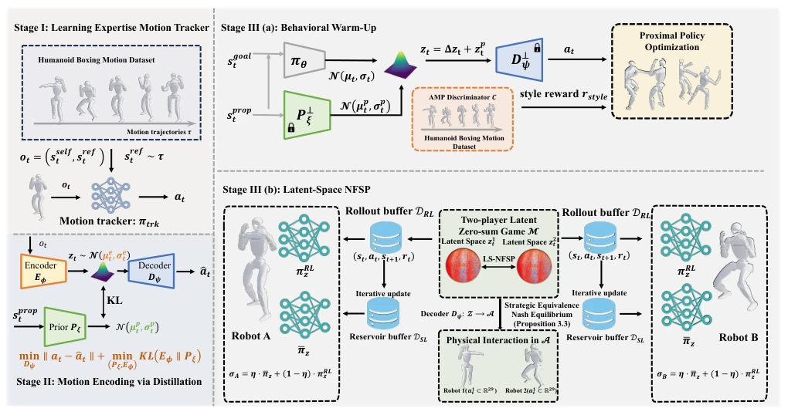
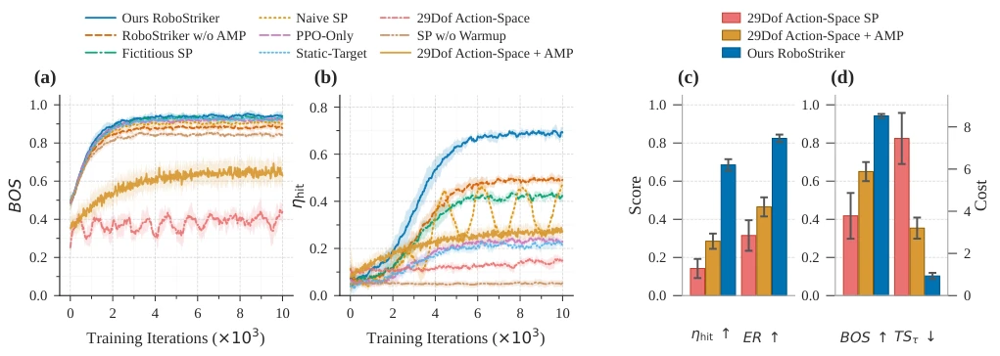
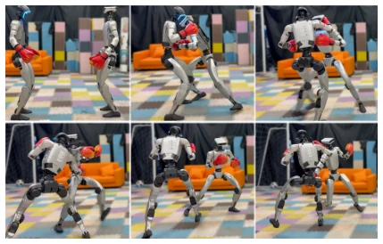
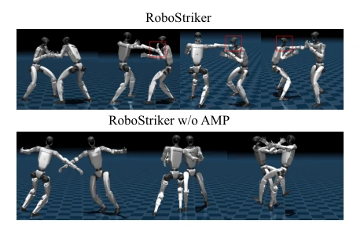

This paper equips a robot boxer with a "latent space brain," attempting to solve an age-old yet extremely difficult problem: how to engage in combat without falling flat on one's face first. The authors were astute, refraining from blindly exploring the 29-degree-of-freedom joint space directly, but instead implemented a motion tracker to distill human actions into a constrained latent space before employing NFSP. This approach is akin to drawing a "safety zone" for the robot; outside the zone, engagement is permitted, but within the zone, stability must be maintained. Although the theoretical approximate Nash equilibrium sounds impressive, the core ultimately relies on the pre-trained decoder as a safety net. The most gratifying aspect is the real-robot deployment; the Unitree G1 can genuinely fight, a significant advantage over pure simulation. However, is selecting a 32-dimensional latent space somewhat heuristic? The performance drops with 64 dimensions, suggesting that excessive complexity leads to overfitting. In summary, this is a successful attempt to embed "physical feasibility" into "strategic gaming." Although it does not solve all problems, it indeed enables the robot to dare to throw punches.
The biggest hurdle for humanoid robots to participate in competitive confrontation is "physical fragility." Conducting multi-agent reinforcement learning in the raw motor space makes it highly likely to trigger balance collapse caused by joint combinations during strategy exploration [5]. Existing Self-Play methods [8] often fail in contact-intensive tasks due to a lack of physical constraints, resulting in robots learning to fall before learning tactics. Although Adversarial Motion Priors (AMP) [6] can improve motion quality, directly conducting strategy gaming in high-dimensional joint space still faces non-stationarity and cold-start problems. This paper aims to resolve the fundamental conflict between strategic exploration and physical feasibility by constructing a latent space zero-sum game, restricting strategy search on a physically feasible manifold, thereby avoiding the dilemma where tactical intelligence fails to emerge due to balance maintenance failure in traditional methods.
RoboStriker adopts a three-level cascaded framework. The first stage trains a Motion Tracker, utilizing motion capture data to learn high-fidelity humanoid boxing actions as the underlying physical foundation. The second stage compresses actions into a topologically bounded Latent Space via distillation, utilizing an encoder, decoder, and state conditional prior to construct a structured manifold, ensuring that latent actions mapped back to the joint space remain physically feasible. The third stage is strategy evolution, first performing behavior Warmup via AMP, then running Neural Fictitious Self-Play (LS-NFSP) on the latent space. The core innovation lies in defining the game as a latent space zero-sum Markov game, with strategy updates conducted in the constrained latent space rather than the original joint space. The decoder is responsible for mapping latent actions to physical actions, guaranteeing exploration safety. NFSP combines PPO and average strategy, solving the non-stationarity problem. This design decouples high-level reasoning from low-level execution, enabling the robot to learn complex tactics while maintaining balance.

Fig. 1: Overview of RoboStriker. Stage I pretrains a motion tracker to produce physically plausible humanoid behaviors; Stage II compresses these behaviors into a bounded latent space for high-level control; Stage III(a) runs warm-up training on top of Stage II, then followed with Stage III(b), a NFSP over latent-space to solve the humanoid boxing as a two-player latent space zero-sum game.
Experiments are based on the Unitree G1 humanoid robot (29-DoF), verified in Isaac Lab simulation and on the physical robot. Comparison baselines include Naive SP, Fictitious SP, PPO-Only, and raw action space self-play, among others. Evaluation metrics cover win rate, attack hit rate, participation, and physical stability (BOS, TS). Results show RoboStriker's win rate is significantly superior to baselines (e.g., 68.52% vs 62.35%), and attack efficiency is higher. Ablation experiments indicate that removing AMP leads to aberrant actions, removing warmup leads to tactical performance stagnation, and a latent space dimension of 32 is optimal. Real-robot deployment verifies Sim-to-Real transfer capability; the robot can stably execute boxing actions in a real environment, proving the effectiveness of the latent space strategy.

Fig. 2: Comprehensive performance evaluation. Subfigures (a) and (b) show the training convergence of base stability and offensive landing rate across all methods. Subfigures (c) and (d) compare RoboStriker with direct 29-DoF action-space self- play with and without AMP, isolating the effects of motion-prior regularization and latent-space action abstraction on tactical proficiency and physical stability. Shaded regions denote the standard deviation across five independent random seeds.

Fig. 3: Real-world validation of RoboStriker.

Fig. 4: Mujoco visualization of RoboStriker and the one without AMP.